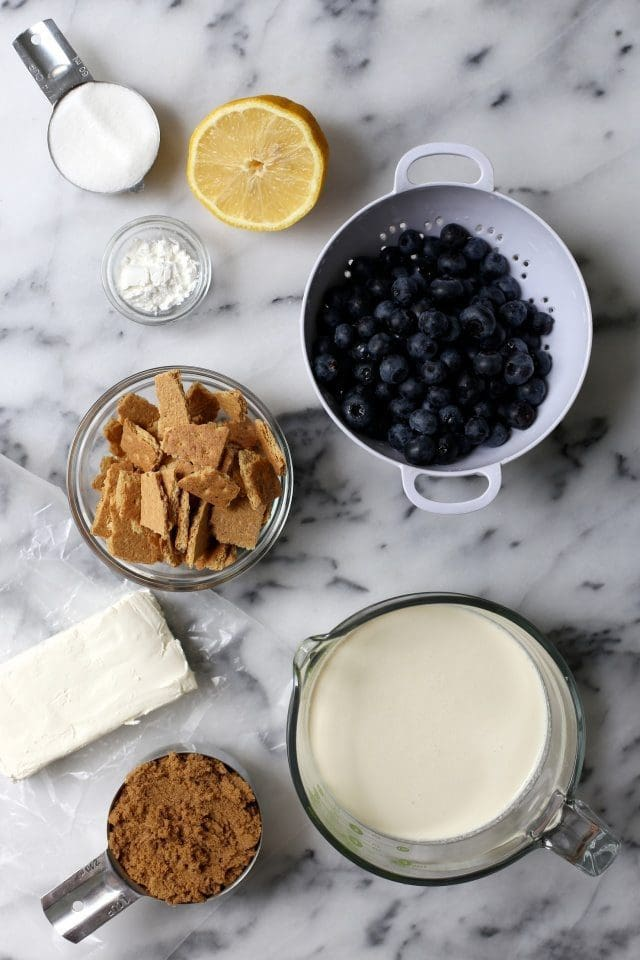

Blueberry Cheesecake

What is Blueberry Cheesecake?
Blueberry cheesecake is a delightful dessert made by combining creamy cheesecake filling with a layer of blueberry topping.
Ingredients
1 cup graham cracker crumbs
¼ cup melted butter
2 tablespoons white sugar
2 (8 ounce) packages cream cheese, softened
1 cup sour cream
¾ cup white sugar
2 tablespoons all-purpose flour
1 teaspoon vanilla extract
4 large eggs
2 cups frozen blueberries, dry pack
⅓ cup blueberry jelly

Recipe
Step 1:
Prepare the Base
Mix graham crumbs, melted butter, and 2 tablespoons sugar in a bowl until well combined. Pat mixture into the bottom of a 9-inch springform pan.
Step 2:
Prepare the Cream layer
Mash cream cheese in a mixing bowl until soft and creamy. Gradually beat in sour cream, 3/4 cup sugar, flour, and vanilla. Beat in eggs, one at a time. Pour mixture into the crumb-lined pan.
Step 3:
Bake and Refrigerate
Bake in the preheated oven until firm to the touch, about 1 hour.Place baked cheesecake in the refrigerator until thoroughly chilled, about 4 hours.
Step 4:
Add Blueberries and Serve
Remove cheesecake from the pan by loosening the edges with a knife and opening the springform latch. Transfer to a serving platter. Place frozen blueberries on top. Melt jelly in a saucepan over low heat; spoon over blueberries to glaze. Chill in the refrigerator until ready to serve.
Variations
- Chocolate Cream Puffs
Add cocoa powder to the dough to make chocolate-flavored puffs. Fill them with chocolate pastry cream or whipped chocolate ganache for a decadent treat.
- Fruit-Filled Cream Puffs
Slice the cream puffs in half and fill them with fresh sliced strawberries, raspberries, or other seasonal fruits. You can also mix the fruit with whipped cream or custard for added flavor.
- Matcha Cream Puffs
Add matcha powder to the dough for a vibrant green color and subtle tea flavor. Fill the puffs with matcha-flavored whipped cream or custard for a unique twist.
- Spiced Cream Puffs
Add warm spices such as cinnamon, nutmeg, or cardamom to the dough for a comforting flavor. Fill the puffs with spiced whipped cream or pumpkin custard for a seasonal treat.